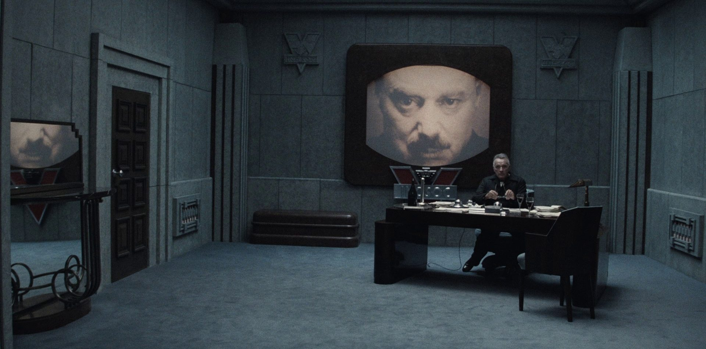

The Decline of Meritocracy in a Fiat Currency Society: War Economies, Centralized Power, and 1984
The parallels between George Orwell’s 1984 and our present society are becoming increasingly apparent. Not only do we see Orwellian contradictions like “War is Peace,” “Freedom is Slavery,” and “Ignorance is Strength,” but we are also witnessing a system that seems to trap individuals in cycles of economic, physical, and mental dependence. While our forefathers once revolted over far less, modern society seems locked into a pattern of exploitation where inflation erodes wages, health crises fuel corporate profits, and the public remains ensnared in a web of debt and dependency.
War is Peace: Perpetual Conflict and Economic Stagnation
In this Orwellian paradox, the system justifies a state of perpetual conflict under the guise of peace and security. The military-industrial complex drives this narrative, and the consequences extend far beyond military spending. Economic stagnation and inflation ensure that, despite technological and industrial progress, the middle class continues to lose ground. Real wages for middle-class labor are worth less than half of what they were a few generations ago, while the cost of living continues to rise.
The idea that “War is Peace” is embodied in the way resources are diverted away from public needs toward military expenditure, ultimately benefiting those at the top of the economic pyramid. As war becomes synonymous with peace, the populace is kept in a constant state of economic struggle, undermining the meritocratic ideals that reward hard work and innovation. Instead of creating a society where individuals can thrive based on their contributions, the system perpetuates inequality and funnels wealth upwards, while obscuring the true cost of this peace—ongoing economic insecurity for most citizens.

Freedom is Slavery: Debt, Dependency, and the Health Crisis
The notion that “Freedom is Slavery” is starkly visible in the manipulation of health and economic systems. Today, many Americans find themselves in a form of wage slavery, bound not by physical chains, but by financial ones. Inflation has eaten away at the value of wages, and the costs of essentials like housing, education, and healthcare have skyrocketed. As a result, even middle-class families struggle to achieve financial security, let alone genuine freedom.
This enslavement is reinforced by the food and pharmaceutical industries, which profit from keeping people both unhealthy and dependent. Industrialized food production prioritizes profitability over nutrition, resulting in diets that contribute to chronic diseases like diabetes, heart disease, and obesity. The pharmaceutical industry, in turn, profits from these conditions, offering medications that treat symptoms without addressing root causes. Drug prices are often artificially inflated to ensure high returns for executives and shareholders, trapping individuals in cycles of treatment and dependence.
This system of profit-driven healthcare undermines personal agency, as individuals are often left with few choices beyond accepting the status quo. The illusion of freedom is maintained through consumer choice, but in reality, people are trapped in a system that keeps them dependent on corporate products for survival. The notion that “Freedom is Slavery” resonates here, as the promise of individual freedom and well-being is subverted by structures that prioritize profit over public health, ensuring that freedom remains elusive for all but a select few.
Ignorance is Strength: Propaganda and the Erosion of Meritocracy
Orwell’s “Ignorance is Strength” finds expression in the way misinformation and controlled narratives are used to maintain the status quo. Large corporations and government agencies often operate with little transparency, obscuring their actions and motives from the public. Meanwhile, the media—frequently owned or influenced by these same corporations—serves to distract and mislead, rather than inform.
Public ignorance strengthens the system by limiting resistance. Many people remain unaware of the ways in which their lives are shaped by forces beyond their control, from inflationary monetary policies to healthcare monopolies and environmental degradation. The complexity of these systems, combined with misinformation, discourages individuals from questioning or understanding the true impact of centralized power on their daily lives.
In an authentic meritocracy, individuals would have the opportunity to influence systems based on their skills, knowledge, and achievements. However, when ignorance is reinforced, people are less able to advocate for change or hold those in power accountable. This eroded understanding ensures that centralized control remains unchallenged, as a misinformed populace lacks the tools to demand a fairer, more merit-based society.
The Forefathers’ Vision and the Modern System of Control
The American Revolution was driven by a rejection of tyranny and an insistence on representation, autonomy, and justice. The founding fathers envisioned a nation where power derived from the people, where individuals were free to pursue their goals without oppressive interference from distant authorities. They believed that the purpose of government was to protect these freedoms, not to infringe upon them.
Today, however, the concentration of power in corporations, bureaucracies, and global organizations runs counter to these founding ideals. The food and pharmaceutical industries profit from making people sick, while inflation and debt diminish the fruits of honest labor. This system of exploitation is compounded by the fact that those in power are often open about their intentions to further consolidate control, as they plan new policies and initiatives that benefit the few at the expense of the many.
While the founding fathers revolted over taxes and a lack of representation, modern society faces challenges that strike at the very heart of personal agency and meritocracy. The modern system not only controls wealth and resources but also shapes public health, knowledge, and freedom. It has evolved into a complex machine that prioritizes bureaucratic power and corporate profits over the well-being of its citizens—a machine that the founders themselves would likely find intolerable.

Reclaiming Meritocracy and Autonomy
To combat these Orwellian paradoxes, reclaiming meritocracy requires a fundamental shift in both economic and social structures. Decentralized systems—such as localized governance, community-led food systems, and alternative currencies like cryptocurrencies—offer a path away from the centralized control that has come to define so many aspects of modern life. By promoting local economies and reducing dependency on large corporations, individuals and communities can begin to rebuild systems that reward merit, innovation, and genuine contribution.
Furthermore, reforming the food and healthcare industries to prioritize public well-being over profit can help break the cycle of dependence and improve overall quality of life. Transparency, education, and accessible healthcare are essential in empowering individuals to make informed decisions and take control of their own lives. By restoring public access to knowledge and dismantling the structures that prioritize profit over people, society can begin to erode the strength that ignorance lends to those in power.
Conclusion
Our society, shaped by the dominance of fiat currencies, corporate power, and perpetual conflict, mirrors the dystopian world of 1984 in unsettling ways. The slogans “War is Peace,” “Freedom is Slavery,” and “Ignorance is Strength” capture the paradoxes that have come to define modern life. A system that should empower and reward individuals based on merit instead exploits them for the benefit of a centralized few.
The path forward lies in decentralizing power, prioritizing public health, and reclaiming autonomy from corporate and bureaucratic control. Only by addressing the roots of these Orwellian contradictions can we hope to restore a society where merit and individual contributions are truly valued, and where the ideals of freedom and equality are not just slogans, but realities.

Thank You!
Thanks for taking the time to read this and any thoughts or feedback can be submitted at thee33xp@proton.me